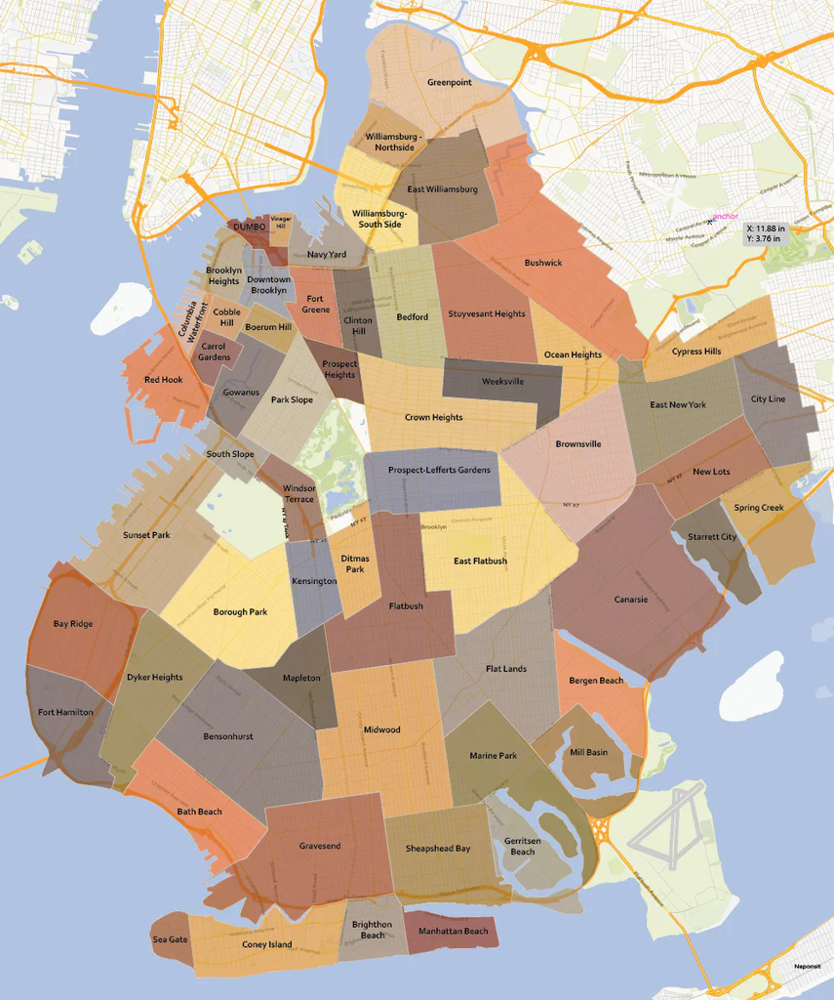

Immigrating to USA
We immigrated to the United States in 2009. Transitioning from Bangaldesh to United States was rough on my family. We barely spoke any english and didn't have a place to live. We lived in our cousins house for three months and because no one in my family had a stable job; we were forced to go back to Bangladesh. After two years, we came back to America because this time my father had a stable job and an apartment. Life here was completely different. But we learned to adapt.

Living In Brooklyn
Our first apartment was in the heart of brooklyn in Midwood. I was admitted to P.S.315, an elementary school near Brooklyn College. School system here was completely different than back home. First of all, school was free, provided free lunch and in my short experience, the teachers actually wanted to teach. I often found myself wanting to fit in with other kids because I was the only brown student in my school. And being the tallest brown kid with a heavy accent, school didn't turn out to be as fun as I imagined but it was still a better experience than it was back home. I made new friends, met people from all over the world and best of all got to try different cultural food!
